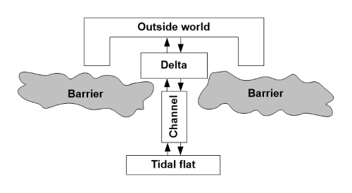
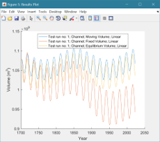

Asmita
ASMITA stands for Aggregated Scale Morphological Interaction between Tidal basin and Adjacent coast. The model is used to examine long-term morphological change in tidal inlets and estuaries.
Contents
Licence
The code is provided as Open Source code (issued under a GNU General Public License).
Requirements
The code is written in MATLAB™ and requires v2018b, or later. Routing within the model makes use of graph and directed graph functions, which were introduced in Matlab 2015b.
Background
The model was first proposed by Marcel Stive and co-workers at TU Delft in the late 90's (see Bibilography below). The idea behind ASMITA is that a tidal basin, or estuary can be sub-dividing into a number of elements (Figure 1). Each element has an equilibrium condition as a function of the prevailing hydrodynamic onditions and following some form of perturbation (eg. sea level rise, addition or removal of volume or area) the model seeks a new equilibrium. For example, if under initial conditions the accommodation space is zero (no net change in the transport of sediment), with increased mean sea level the accommodation space becomes positive and sediment may be imported, the opposite is true when sea level falls.

Sample output
The following is an example of the model output showing the variation in channel volume when the model is forced by sea level rise and a variation in tidal range forced by the nodal tidal cycle (18.6 year cycle).

Bibliography
Wang Z B, Townend I and Stive M, 2020, Aggregated morphodynamic modelling of tidal inlets and estuaries. Water Science and Engineering, 13 (1), 1-13
Lodder Q J, Wang Z B, Elias E P L, van der Spek A J F, de Looff H and Townend I H, 2019, Future Response of the Wadden Sea Tidal Basins to Relative Sea-Level rise—An Aggregated Modelling Approach. Water, 11 (10),
Townend I H, Wang Z B, Stive M J E and Zhou Z, 2016, Development and extension of an aggregated scale model: Part 1 – Background to ASMITA. China Ocean Engineering, 30 (4), 482-504
Townend I H, Wang Z B, Stive M J E and Zhou Z, 2016, Development and extension of an aggregated scale model: Part 2 – Extensions to ASMITA. China Ocean Engineering, 30 (5), 651-670
Dal Monte L, Di Silvio G, 2004, Sediment concentration in tidal lagoons. A contribution to long-term morphological modelling, Journal of Marine Systems, 51(1-4), 243-255.
Di Silvio G, 1989, Modelling the morphological evolution of tidal lagoons and their equilibrium configurations, In: 22nd IAHR Congress, IAHR, pp. C-169-C-175.
Friedrichs CT, Armbrust BD, de Swart HE, 1998, Hydrodynamics and equilibrium sediment dynamics of shallow, funnel-shaped tidal estuaries, In: Dronkers J, Scheffers MBAM (Eds.), Physics of Estuaries and Coastal Seas, Balkema, Rotterdam, pp. 315-327.
Jeuken MCJL, Wang ZB, Keiller D, Townend IH, Liek GA, 2003, Morphological response of estuaries to nodal tide variation, In: International Conference on Estuaries & Coasts (ICEC-2003), pp. 167-173.
Stive MJF, Capobianco M, Wang ZB, Ruol P, Buijsman MC, 1998, Morphodynamics of a tidal lagoon and adjacent coast, In: Physics of Estuaries and Coastal Seas: 8th International Biennial Conference on Physics of Estuaries and Coastal Seas, 1996, A A Balkema, Rotterdam, pp. 397-407.
Townend IH, Amos CL, 2008, Estuary and inlet morphodynamics and evolution, In: Littoral 2008, A Changing Coast: Challenges for the Environmental Policies, CORILA, EUCC-The Coastal Union and EUROCOAST, Venice, pp. 1-8.
Townend IH, Wang ZB, Rees JG, 2007, Millennial to annual volume changes in the Humber Estuary, Proc.R.Soc.A, 463, 837-854.
Townend IH, Wang ZB, Spearman J, Wright AD, 2008, Volume and surface area changes in estuaries and tidal inlets, In: 31st International Conference on Coastal Engineering, ASCE, New York, 5, pp. 4495-4507.
van Goor MA, Zitman TJ, Wang ZB, Stive MJF, 2003, Impact of sea-level rise on the morphological equilibrium state of tidal inlets, Marine Geology, 202, 211-227.
Wang ZB, de Vriend HJ, Stive MJF, Townend IH, 2007, On the parameter setting of semi-empirical long-term morphological models for estuaries and tidal lagoons, In: River, Coastal and Estuarine Morphodynamics, Taylor & Francis, London, 1, pp. 103-111.
Wang ZB, Karssen B, Fokkink RJ, Langerak A, 1998, A dynamical/empirical model for the long-term morphological development of estuaries, In: 8th International Biennial Conference on Physics of Estuaries and Coastal Seas, 1996, The Hague, pp. 279-286.
Manual
The manual provides further details of setup and configuration of the model. The mat files for the demonstration models can be found in the example folder here.